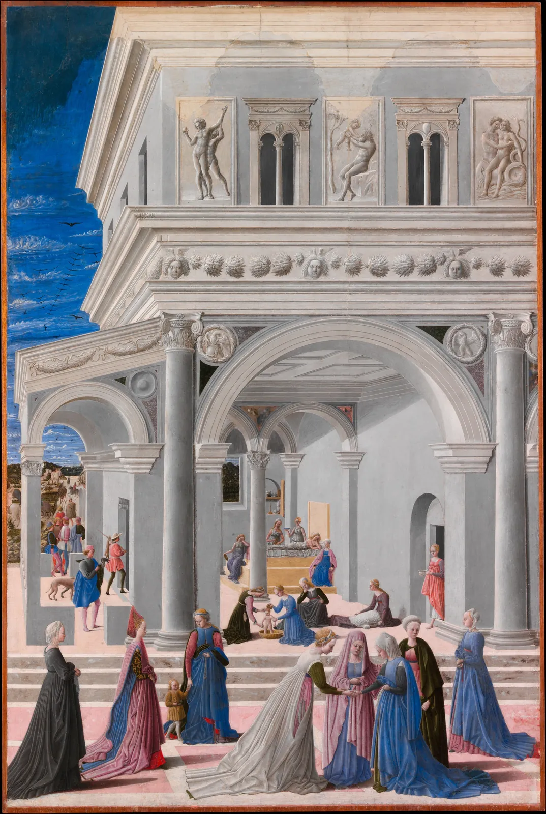
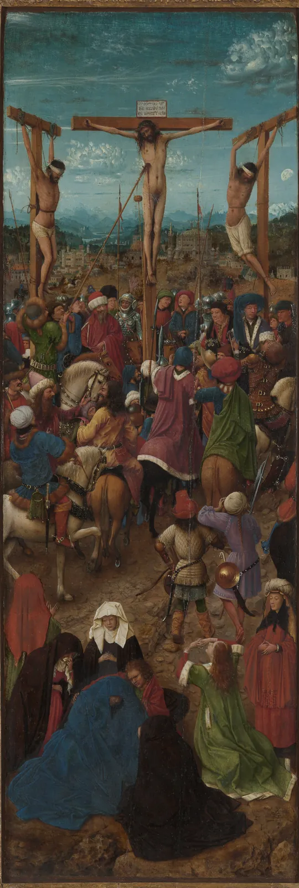
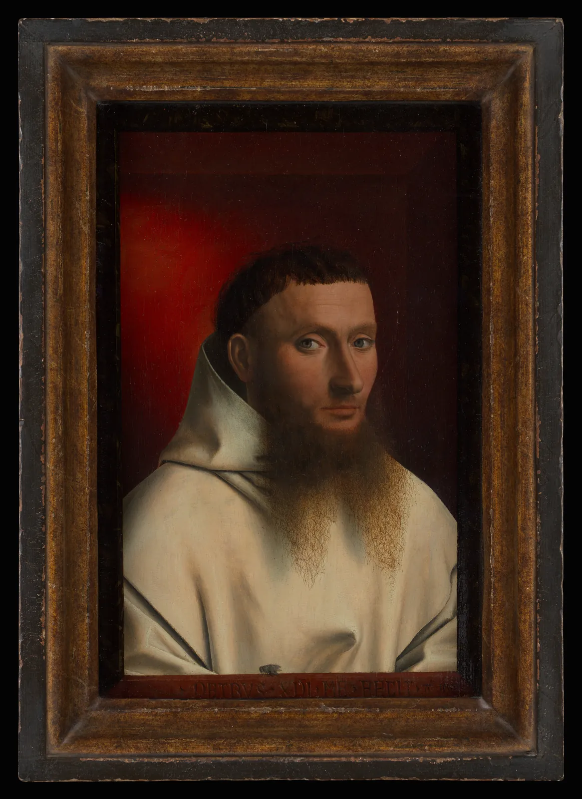
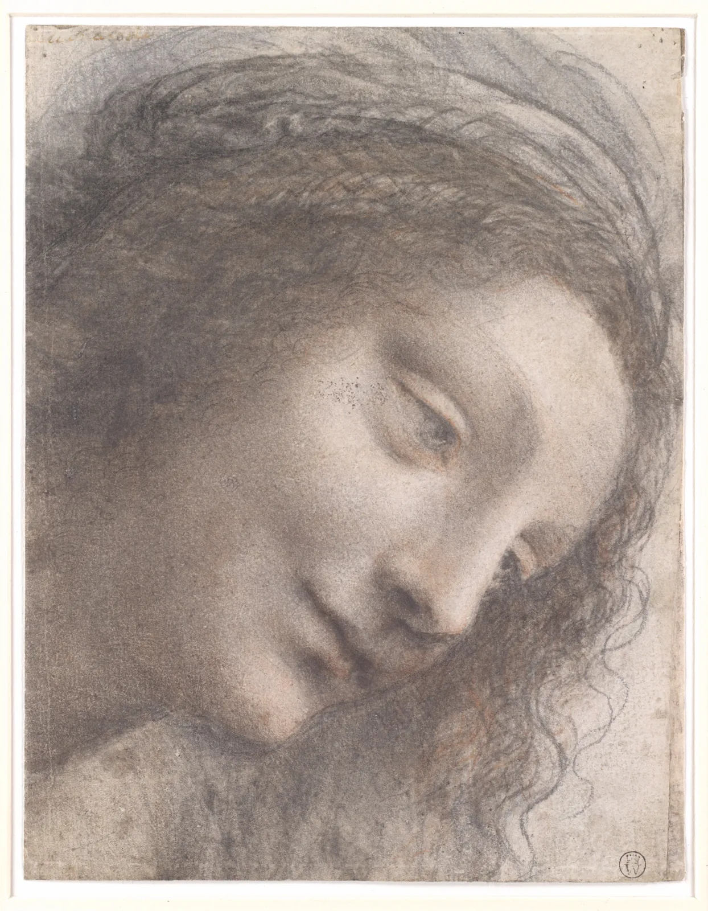
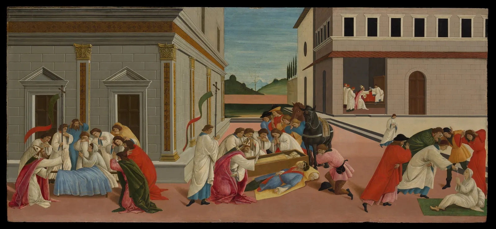

르네상스: 원근과 비례
복도 끝에 서서 사진을 찍으면 바닥의 줄눈과 천장의 선이 모두 화면 한가운데 한 점으로 빨려 들어간다. 지금은 누구나 아는 이 모습을 그림 위에 규칙으로 옮긴 것은 15세기 피렌체의 건축가와 화가들이었다. 그 뒤로 그림은 벽에 뚫린 창문처럼 보이기 시작했다. 이 장은 그 규칙, 곧 선 원근법을 직접 작도하고 실제 작품 위에서 소실점을 찾아본다. 같은 시기에 바뀐 물감, 템페라에서 유화로의 변화와 북유럽 화가들의 세밀함, 레오나르도의 녹아드는 경계도 함께 본다. 그리고 규칙을 알던 화가들이 그 규칙을 어떻게 고쳐 썼는지도.
- 선 원근법의 소실점·지평선·거리점이 무엇이고, 그림 속 크기가 거리에 반비례한다는 원리를 작도로 확인한다.
- 실제 르네상스 그림 위에 소실선을 그어 소실점을 찾고, 교점이 한 점에 모이지 않는 이유를 읽는다.
- 지평선이 곧 보는 사람의 눈높이이며, 같은 키의 인물들이 그 선을 기준으로 크기가 정해진다는 것을 안다.
- 템페라와 유화 글레이즈가 색을 만드는 방식의 차이를 모델로 비교한다.
- 북유럽의 대기 원근과 레오나르도의 스푸마토를 작품에서 재 보고, 원근법을 "진보의 기준"으로 읽지 않는다.
그림이 창문이 된 순간
아래 두 그림은 약 170년 떨어져 있다. 왼쪽은 시에나의 화가 두초가 1300년 무렵 그린 작은 성모자다. 인물 뒤는 금박으로 덮여 있고, 성모가 어떤 방에 앉아 있는지, 우리가 얼마나 떨어져 보고 있는지는 그려지지 않았다. 오른쪽은 1467년 이탈리아 중부의 화가 프라 카르네발레가 그린 「성모의 탄생」이다. 같은 성스러운 이야기를 다루지만 사람들은 대리석 궁전 앞 광장에 서 있고, 기둥과 아치는 깊숙이 물러나며, 계단 위 사람들은 뒤로 갈수록 작아진다. 우리는 그림 앞에 서서 창문 너머의 장면을 들여다보는 사람이 된다.


이 변화가 일어난 14세기 말~16세기의 이탈리아와 북유럽 미술을 우리는 르네상스(Renaissance)라고 부른다. "다시 태어남"이라는 뜻으로, 고대 그리스·로마의 학문과 예술을 되살린다는 당시 지식인들의 자의식에서 나온 말이다. 16세기 화가이자 전기 작가 조르조 바사리(Giorgio Vasari)가 『미술가 열전』(1550)에서 미술의 "부활"을 말했고, 시대 이름으로 널리 굳은 것은 19세기 역사가들(쥘 미슐레, 야코프 부르크하르트)의 책을 거치면서다. 그러니 이 이름도 1장에서 말한 대로 뒤에 붙인 정리다. 바사리는 앞 시대를 "서툰 그리스풍"이라 낮춰 불렀지만, 그림 1의 금빛은 서툶이 아니라 다른 목적의 선택이었다(2장).
두 그림의 차이를 만든 가장 큰 도구가 선 원근법(Linear perspective)이다. 한 눈으로 한 자리에서 본 장면을, 눈과 물체를 잇는 직선이 그림 면을 뚫고 지나가는 자리에 옮겨 그리는 방법이다. 그렇게 그리면 실제로 평행한 선들이 그림 속에서는 한 점으로 모인다. 그 점이 소실점(Vanishing point)이다.
선 원근법의 규칙
전해지는 이야기로는 피렌체의 건축가 필리포 브루넬레스키(Filippo Brunelleschi)가 1420년 무렵, 대성당 앞에서 맞은편 세례당을 작은 판에 그리고 그 판에 구멍을 뚫어, 뒤에서 거울에 비친 그림을 들여다보게 했다고 한다. 거울을 치우면 진짜 세례당이 같은 자리에 같은 크기로 보였다는 것이다. 원판은 남아 있지 않고 이 실험은 그의 전기 작가가 남긴 기록으로만 전한다. 몇 해 뒤 인문학자이자 건축가 레온 바티스타 알베르티(Leon Battista Alberti)는 『회화론』(De pictura, 1435, 이듬해 이탈리아어판)에서 그림의 틀을 "열린 창"으로 보고 그 창 위에 장면을 작도하는 방법을 글로 정리했다.
그림 3을 식 하나로 줄이면 이렇다. 눈에서 그림 면까지의 거리를 \(f\), 물체까지의 거리를 \(Z\)라 하면, 그림 속 크기는 실제 크기에 \(f/Z\)를 곱한 것이다.
알베르티의 작도는 바닥의 정사각형 타일에서 시작한다. 그림 아래 가장자리를 같은 간격으로 나누고 그 점들을 소실점과 이어 화면 안으로 들어가는 선(직교선)을 긋는다. 그다음 타일의 가로줄을 어디에 그을지가 문제인데, 이것을 정하는 것이 보는 사람과 그림 사이의 거리다. 지평선 위에서 소실점으로부터 그 거리만큼 떨어진 점을 거리점(Distance point)이라고 하는데, 정사각형 타일의 대각선은 모두 이 점으로 모인다. 아래에서 소실점을 끌고 거리를 바꿔 본다.
알베르티의 창: 바닥 타일 작도
원근법은 "자연스러운 눈"이 아니라 몇 가지 약속 위에 서 있다. 눈은 하나이고, 움직이지 않으며, 그림 면은 평평하다. 실제 우리는 두 눈으로 보고 고개를 돌리며 장면을 훑는다. 그래서 짧은 거리로 작도한 그림을 다른 자리에서 보면 가장자리가 늘어나 보인다. 화가가 고른 거리는 그림이 걸릴 방과 관객의 자리를 염두에 둔 결정이었다.

그림 위에서 소실점 찾기
작도의 규칙을 알았으니 거꾸로 해 본다. 완성된 그림에서 실제로 평행했을 선, 곧 건물 벽의 처마선, 바닥의 줄눈, 창틀처럼 화면 안쪽으로 들어가는 선을 골라 연장하면 그 교점이 소실점이다. 아래는 보티첼리가 1500년 무렵 그린 「성 제노비우스의 세 기적」이다. 왼쪽 건물의 옆벽(노란 선 둘)과 오른쪽 바닥의 줄무늬(파란 선 둘)에 이 책이 직접 선을 그었다. 선의 끝 손잡이를 끌어 다른 모서리에 대 보고, 교점이 어떻게 흩어지는지 본다.
보티첼리의 광장에서 소실점 찾기
교점이 정확히 한 점에 모이지 않는다고 해서 보티첼리가 원근법을 몰랐던 것은 아니다. 화가들은 판 위에 핀을 꽂고 실을 당겨 직교선을 긋곤 했고, 많은 르네상스 패널화의 소실점 자리에서 실제로 작은 구멍이나 긁은 선이 발견된다. 그러나 그 위에 템페라를 수십 겹 올리며 건물과 인물을 다듬는 동안 선은 조금씩 움직인다. 그리고 이 그림은 측량도가 아니라 성인의 기적 세 장면을 한 광장에 펼친 이야기 그림이다. 원근법의 정확함보다 장면을 읽히게 하는 일이 먼저였다(8절에서 다시 본다).
눈높이와 비례
지평선은 하늘과 땅의 경계이기 전에 보는 사람의 눈높이다(그림 3). 이 사실에서 르네상스 화가들이 즐겨 쓴 요령이 하나 나온다. 평평한 땅에 선 같은 키의 사람들을 서 있는 사람의 눈높이에서 보면, 거리와 상관없이 모두의 눈이 지평선 위에 걸린다. 그래서 광장의 군중을 그릴 때 머리를 대략 한 줄에 맞추는 방식을 흔히 볼 수 있다. 알베르티는 『회화론』에서 그림 속 사람의 키를 셋으로 나눈 단위(braccio, 팔 길이)로 바닥의 눈금을 정하고, 소실점을 그 사람 키의 높이에 두라고 권했다. 사람이 그림 속 공간의 자가 된 것이다.
비례는 원근만의 문제가 아니었다. 르네상스 사람들은 고대 로마의 건축가 비트루비우스(Vitruvius)의 『건축 십서』에 적힌 인체 비례(얼굴은 키의 10분의 1, 머리는 8분의 1 등)를 다시 읽고, 건물과 인체가 같은 수의 질서를 따라야 한다고 생각했다. 인체 비례는 DrawingBook의 인체의 비례에서 자세히 다룬다. 여기서는 원근과 비례가 만나는 자리, 곧 그림 속 사람의 크기를 정하는 규칙을 본다. 바닥 위의 사람을 끌어 옮기고 눈높이를 바꿔 본다.
지평선은 눈높이: 같은 키의 사람들
눈높이 규칙을 알면 그림 속에서 화가가 어디에 서 있었는지(또는 서 있다고 상상하게 했는지)가 보인다. 높은 제단 위에 걸릴 그림은 지평선을 낮게 잡아 아래에서 올려다보는 관객과 맞추기도 했고, 벽화는 방 안 관객의 눈높이를 염두에 두고 작도하기도 했다. 원근법은 그림 속 공간만이 아니라 그림 앞의 공간, 곧 관객의 자리까지 설계하는 도구였다.
템페라에서 유화로
그림 1과 그림 2의 차이에는 물감도 있다. 14~15세기 이탈리아 패널화의 주된 물감은 템페라(Tempera)였다. 안료 가루를 달걀노른자에 개어 쓰는 물감으로, 빨리 마르고 단단하며 무광에 가깝다. 빨리 마르기 때문에 색을 화면 위에서 섞어 문지르기 어렵고, 가는 붓으로 짧은 선을 촘촘히 겹쳐(해칭) 명암을 쌓는다. 14세기 말~15세기 초 피렌체의 화가 첸니노 첸니니(Cennino Cennini)의 『미술의 책』(Il libro dell'arte)은 패널을 준비하고 석고 바탕을 칠하고 금박을 붙이고 템페라를 쌓는 과정을 자세히 적은 기록으로 남아 있다.
유화(Oil painting)는 안료를 아마인유 같은 건성유에 갠다. 기름은 천천히 마르고, 마른 뒤에는 투명한 막이 된다. 그래서 밝은 바탕 위에 색을 조금만 섞은 투명한 층을 여러 번 덮는 글레이즈(Glaze)가 가능해진다. 빛은 투명한 층들을 지나 밝은 바탕에서 반사되어 다시 층들을 지나 나온다. 지날 때마다 일부 색이 흡수되므로, 흰색이나 검정을 섞지 않고도 색이 깊고 어두워진다. 그림 2처럼 15세기 후반에는 템페라와 기름을 한 그림에 함께 쓰는 일도 흔했다. 아래에서 글레이즈를 한 겹씩 올리며, 같은 명도를 불투명한 물감 섞기로 맞춘 색과 비교한다.
글레이즈를 한 겹씩: 투명한 층과 불투명한 섞기
유화가 템페라를 단번에 대체한 것은 아니다. 템페라는 섬세한 선과 밝고 고른 색면에 강했고, 많은 화가가 밑칠은 템페라로, 마무리는 기름 글레이즈로 하는 식으로 둘을 섞었다. 바탕도 달라졌다. 16세기 베네치아 화가들은 나무판 대신 캔버스를 널리 썼고, 캔버스와 유화의 조합은 바로크(4장)를 거치며 서양 회화의 표준이 된다.
북유럽의 세밀함
같은 시기 알프스 북쪽, 지금의 벨기에 지역인 플랑드르의 화가들은 다른 길로 그림을 창문으로 만들었다. 얀 반 에이크(Jan van Eyck)와 그 뒤를 이은 화가들은 이탈리아식 수학적 작도보다 눈에 보이는 세부를 끝없이 쌓는 쪽을 택했다. 유화의 투명한 층으로 금속의 반사, 털가죽의 결, 유리와 보석의 빛을 그렸다.


그림 5의 먼 산은 왜 푸르고 옅을까. ColorBook 6장과 DrawingBook의 풍경과 대기에서 본 대기 원근(Aerial perspective)이다. 멀리 있는 것일수록 그 사이 공기가 흩뜨린 하늘빛이 끼어들어 밝아지고, 푸르러지고, 대비가 줄어든다. 선 원근법이 크기로 거리를 만든다면 대기 원근은 색과 명암으로 거리를 만든다. 아래에서 그림 위의 두 표본 창을 끌어 가까운 곳과 먼 곳의 색을 잰다.
반 에이크의 먼 산: 가까운 곳과 먼 곳의 색 재기
북유럽의 세밀함과 이탈리아의 작도는 서로를 배웠다. 플랑드르 유화는 15세기 후반 이탈리아에서 크게 환영받았고, 이탈리아의 원근법은 뒤러(그림 4) 같은 북쪽 화가들이 열심히 공부했다. "이탈리아는 수학, 북유럽은 눈"이라는 대비는 이해를 돕는 단순화일 뿐이다.
스푸마토: 녹아드는 경계
르네상스 회화의 또 하나의 발명은 경계를 지우는 일이었다. 레오나르도 다 빈치(Leonardo da Vinci)는 사물에 뚜렷한 윤곽선이 있다는 생각을 의심했다. 그의 노트에는 빛과 그림자가 선 없이 연기처럼 서로에게 스며들어야 한다는 취지의 글이 여러 번 나온다. 이렇게 밝음에서 어둠으로 경계를 느끼지 못할 만큼 서서히 옮겨 가는 기법을 스푸마토(Sfumato)라고 부른다. 이탈리아어로 "연기(fumo)처럼 사라진"이라는 뜻이다.

스푸마토가 무엇을 바꾸는지 직접 본다. 아래 두 얼굴은 같은 빛, 같은 형태다. 왼쪽 층은 윤곽선과 또렷한 경계로, 오른쪽 층은 경계를 일정한 폭으로 녹여 그렸다. 가운데 경계선을 끌어 비교하고, 녹이는 폭을 바꿔 본다.
윤곽선과 스푸마토
스푸마토는 대기 원근과 같은 관찰에서 나왔다. 둘 다 "우리가 보는 것은 물체 그 자체가 아니라 물체와 눈 사이를 지나온 빛"이라는 생각이다. 윤곽선을 포기한 대가로 형태는 명암이 지탱해야 했고, 이 방향은 다음 세기의 빛과 어둠의 그림(4장)으로 이어진다.
규칙이 깨지는 순간

그림 8은 원근법으로 한 순간, 한 자리에서 본 광장을 짓고는 그 안에 서로 다른 시간의 장면 세 개를 넣었다. 이렇게 한 화면에 이야기의 여러 순간을 늘어놓는 방식을 연속 서술(Continuous narrative)이라고 한다. 엄밀한 "창문"이라면 불가능한 일이지만, 관객은 별 어려움 없이 왼쪽에서 오른쪽으로 이야기를 읽는다. 원근법은 이야기를 담는 무대였지, 이야기보다 앞선 규칙이 아니었다.
규칙은 다른 방식으로도 굽혀졌다. 앞 시뮬레이터에서 본 교점의 흩어짐, 가장자리 인물을 덜 늘린 것, 주인공을 원근 규칙보다 크게 그린 것 모두 화가의 선택일 수 있다. 그리고 원근법이 없는 그림이 덜 발전한 그림인 것도 아니다. 그림 1의 금빛 바탕은 성모를 우리 세계 바깥의 존재로 보이게 하려는 목적에 맞는 방법이었고, 같은 시기 중국과 한국의 산수화는 한 시점에 묶이지 않고 화면 속을 거닐게 하는 공간을 발전시켰다(10장). 원근법은 15세기 유럽이 "그림이 무엇이어야 하는가"에 내놓은 한 가지 답이다. 그 답이 강력했기 때문에 이후 수백 년 동안 서양 미술의 기본값이 되었고, 19세기 말 화가들이 그 기본값을 다시 의심하기 시작한다(9장).
르네상스 화면 짓기
마지막으로 이 장의 도구를 한 무대에 모은다. 양쪽 건물 사이의 광장과 뒷벽, 세 사람(어른 둘과 아이 하나)이 있다. 소실점을 끌어 시점을 정하고, 보는 거리와 눈높이를 정한 뒤, 사람들을 광장 위에 배치한다. "소실점 흩기"를 켜면 보티첼리의 그림처럼 양쪽 건물의 소실점이 조금씩 어긋난다.
원근 무대 설계기
르네상스 화가의 작업 순서도 이와 비슷했다. 먼저 지평선과 소실점을 정하고, 바닥과 건물을 작도하고, 인물의 자리와 크기를 그 위에 정한다. 그다음 물감으로 넘어가 템페라든 유화든 층을 쌓는다. 작도는 출발점이었고, 화가의 눈은 마지막까지 그 작도를 고쳤다.
그림 읽기 모임 노트
소실점은 한 점이 아니라 작은 원이었다
2회차(2027년 9월 11일, 토요일)의 주제는 원근법이다. 서윤의 처음 계획은 소실점의 원리를 슬라이드로 설명하는 것이었다. 한도경은 "설명은 5분이면 끝나. 사람들이 자로 직접 그어 보게 해"라고 했다. 둘은 90분 가운데 25분을 활동에 쓰기로 하고, 대상 그림으로 보티첼리의 「성 제노비우스의 세 기적」을 골랐다. 건물의 선이 양쪽에 있고, 이야기도 있어서 선을 긋다 지루해질 틈이 없다.
서윤은 이 장의 시뮬레이터에서 선 네 개(왼쪽 건물 옆벽 둘, 오른쪽 바닥 줄무늬 둘)로 교점 여섯 개를 구했다. 가장 먼 두 교점은 1600 px 폭 사진에서 124 px 떨어져 있었다. 그림을 A4 가로에 폭 270 mm로 뽑으면 약 21 mm다. 그런데 그 먼 교점 하나는 같은 벽의 두 선끼리 만든 것이었다. 그것을 빼면 나머지 다섯 교점은 51 px, 인쇄본에서 약 9 mm 안에 모였다. 교점들의 평균 높이, 곧 지평선은 그림 위에서 약 42% 자리였다. 서윤은 이 결과를 활동지의 규칙으로 바꿨다. "한쪽 벽에서 두 개, 반대쪽 벽이나 바닥에서 두 개."
예행연습에서 서윤이 그은 선은 연필이 굵어 교점이 더 흩어졌다. 도경은 종이에 직접 긋지 말고 투명 필름을 대고 가는 유성펜을 쓰자고 했다. 그러면 같은 인쇄본을 다음 사람도 쓸 수 있고, 조마다 필름을 겹쳐 비교할 수도 있다. 대학생 단골은 미리 활동지를 보고 질문을 남겼다. "원근이 정확할수록 더 좋은 그림인가요?" 도경은 그 질문을 활동지 마지막 칸에 그대로 옮겨 적자고 했다. "교점이 9 mm 흩어진 이 그림은 실패작일까?"를 함께 묻기 위해서다.
| 순서 | 그림 | 읽기 카드의 한 줄(색 · 구도 · 기법) |
|---|---|---|
| 1 | 두초, 「성모자」(비교용, 5분) | 금빛 바탕 · 깊이 대신 난간 하나 · 템페라와 금박 |
| 2 | 프라 카르네발레, 「성모의 탄생」 | 밝은 대리석과 푸른 옷 · 안쪽 방으로 모이는 건물 선 · 템페라와 유채 |
| 3 | 보티첼리, 「성 제노비우스의 세 기적」(활동지) | 분홍 바닥과 회색 벽 · 지평선 약 42%, 세 장면이 한 광장에 · 나무판에 템페라 |
| 4 | 반 에이크, 「십자가 처형」 | 푸르고 옅은 먼 산 · 위아래로 쌓인 군중 · 투명한 유채 층 |
| 5 | 레오나르도, 「성모 머리」 소묘 | 초크의 붉은 기와 검정 · 숙인 얼굴의 사선 · 선 없는 명암(스푸마토) |
핵심 정리
- 선 원근법은 한 눈, 고정된 시점, 평평한 그림 면을 가정하고 장면을 그림 면에 투영한다. 그림 속 크기는 거리에 반비례하고(\(x' = fX/Z\)), 화면 안쪽으로 뻗는 평행선은 소실점에 모인다.
- 정사각형 타일의 대각선은 거리점에 모인다. 거리점까지의 거리가 곧 그림을 바로 볼 거리이며, 너무 짧으면 가장자리가 늘어나고 너무 길면 바닥이 납작해진다.
- 실제 그림 위에서 소실선을 연장하면 교점은 작은 원으로 흩어진다. 기울기가 비슷한 선끼리의 교점은 불안정하므로 서로 다른 면의 선을 고른다.
- 지평선은 보는 사람의 눈높이다. 서서 본 광장에서는 같은 키 사람들의 눈이 거리와 상관없이 지평선 근처에 걸린다.
- 템페라는 빨리 말라 선을 겹쳐 명암을 쌓고, 유화는 투명한 글레이즈 층으로 흰색이나 검정을 섞지 않고도 깊은 색을 낸다. 반 에이크는 유화의 발명자가 아니라 그 기법을 정교하게 끌어올린 화가다.
- 대기 원근(먼 것이 밝고 푸르고 대비가 낮다)과 스푸마토(경계를 녹이는 명암)는 크기가 아니라 빛으로 거리를 만든다.
- 원근법은 이야기를 위한 무대였고 화가들은 그것을 고쳐 썼다. 원근법이 없는 그림은 덜 발전한 그림이 아니라 다른 목적의 그림이다.
확인 퀴즈
1. 알베르티의 방법으로 바닥 타일을 작도했더니 맨 앞줄 타일이 화면에서 폭보다 훨씬 깊은 길쭉한 사다리꼴이 되었다. 가장 알맞은 원인은?
2. 평평한 광장을 서 있는 사람의 눈높이에서 원근법으로 그렸다. 광장 여기저기에 선 같은 키의 어른들의 머리는 어디에 놓이는가?
3. 같은 어두운 붉은색을 낼 때, 유화 글레이즈가 불투명한 붉은 물감에 검정을 섞는 것보다 맑고 선명하게 보이는 까닭으로 가장 알맞은 것은?
4. 보티첼리의 그림에서 건물과 바닥의 선을 연장했더니 교점이 한 점이 아니라 지름 수 mm의 원 안에 흩어졌다. 가장 알맞은 해석은?